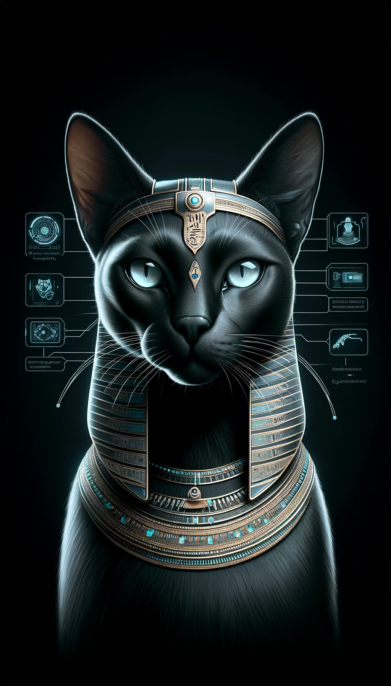

01Disclosure
CheapBugs
Base-native vulnerability intake and review. Public-safe records live onchain while sensitive evidence stays encrypted before it reaches IPFS.
Bastet security network
Bastet connects open tools for internet measurement, vulnerability disclosure, security review, and contributor incentives—one guardian layer across the full workflow.

01 / The network
Each project solves a distinct part of the problem. Bastet turns them into a coherent path from observation to verified action.
Base-native vulnerability intake and review. Public-safe records live onchain while sensitive evidence stays encrypted before it reaches IPFS.
A distributed observatory for internet scan data: collect measurements, attest to them, preserve datasets, and explore results locally.
The high-volume scanning engine behind NWeb—tooling to generate, distribute, and import large internet measurement datasets.
An early incentive layer for internet measurement—designed to reward operators who contribute useful scan coverage and data.
02 / Operating model
A shared workflow makes separate security tools more useful together. Bastet is the coordination point—not a black box replacing operator judgment.
MassPull and NWeb collect reproducible signals from the public internet.
CheapBugs turns a finding into a protected, auditable disclosure.
Reviewers validate impact, evidence, and remediation before rewards move.
ScanToken and BASTET coordinate incentives for useful, authorized work.
03 / Virtuals agent
Bastet the Protector is active on Virtuals. The next evolution is an EconomyOS identity that can route scoped security work through ACP, manage its own protected wallet, and coordinate specialist tools through a GAME-powered runtime.
Every security job must be explicitly authorized, tightly scoped, and subject to human verification.
Inspect Bastet on VirtualsPortable agent identity and reputation
Services, payments, and verifiable jobs
Agent-controlled multichain settlement
GAME SDK plus Bastet's specialist tools
Agent 20236 has not registered an ACP identity yet. This panel will detect and surface it automatically when migration is complete.
04 / $BASTET
BASTET is the Virtuals-native token for Bastet the Protector. Its long-term role is to align security contributors, reviewers, and the agent economy around work that makes the network safer.
Token data is loaded directly from Virtuals. This is project information, not financial advice.
0xB34b…CeC4Connecting to Virtuals API…
The mandate
Measure what is exposed. Protect what is sensitive. Reward what is useful.
Open infrastructure. Verifiable results. Human accountability.